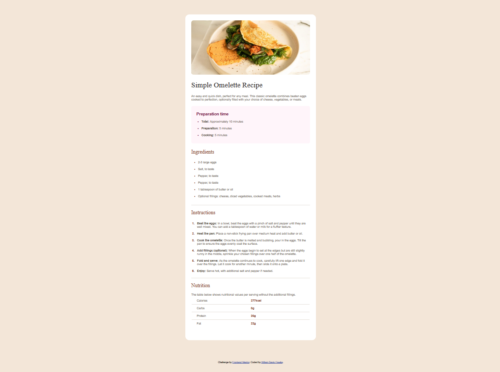
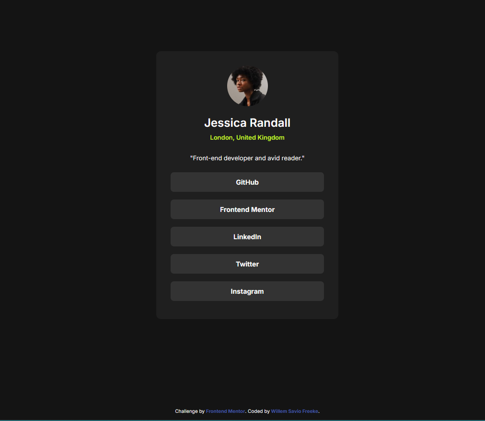

Projects
Click to view my projects!

Recipe Website
Recipe website built with HTML, CSS, and JavaScript. It features a user-friendly interface for reading recipes, with responsive design for mobile devices.
Source code: Github

Links Profile
Social Links Profile built with HTML, CSS, and JavaScript. It features a user-friendly interface for accessing social media links, with responsive design for mobile devices.
Source code: Github